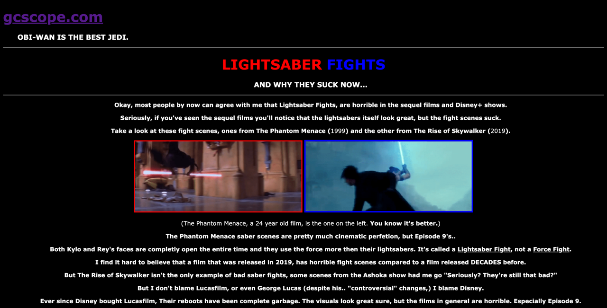
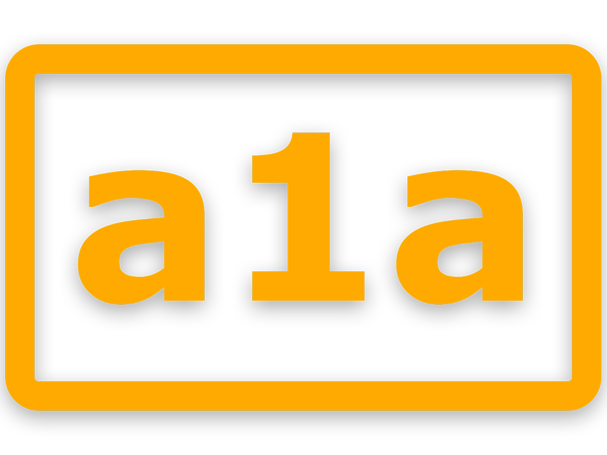

a1a.ca
07/12/26
It's been two weeks since I wrote a blog (Already broke my promise, but then again, who is reading these?) and a few things have happened. I linked my web host to the custom web domain today, so now it is officially called a1a.ca. Tomorrow I'm gonna add a1a to the Google Search Console so you can see it on Google. I can't do it right now because my dad owns the domain name and I don't know the password to his account (Same reason it took me a while to change the domain name) I'll eventually buy the domain name off of him, but for now I have to use his computer to update anything related to my website's DNS settings.
Once everything is good to go, I'll write another blog, I'll get working on the never ending comment section, and I want to add a view count. I am also working on writing an autobiography, and I'll try to make it fairly detailed. Originally i was skeptical of putting pictures of myself on the site, but then again if you search my name on Google Photos it comes back with a bunch of photos of me, so it's too late to try to keep my identity "private".
I also got banned from Claude. It's funny thinking about it because I made a whole blog just glazing Claude and the next day they banned me. I made another account, so now it doesn't matter, but still.
Also, I'm thinking of changing the homepage so it's just the latest 3 blogs I wrote, almost exactly like the links.net homepage. Ever since I found out about him in 2023, Justin Hall has been a big reason on why I wanted to make a website. My early web projects' designs were inspired by his website (very little CSS and 90's themed):

Compare this to now, I've come a long way.
I'll add these old web projects of mine onto the site for you guys to see. Maybe that's what I'll use the archive page for. Originally I was thinking of using the archive page to categorize my blogs by year and month, but I can incorporate that into the blogs page anyways. I am also thinking of writing a poem that has no meaning at the end of each blog, I'll start that on blog 5.
Anyways I'll end it here. I'll write another blog tomorrow to make up for not posting anything in two weeks. I also have this image:

Consider this as my apology.
{kind=link}
PSALM 144:1